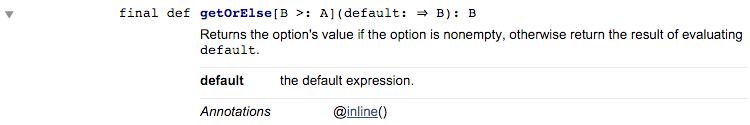
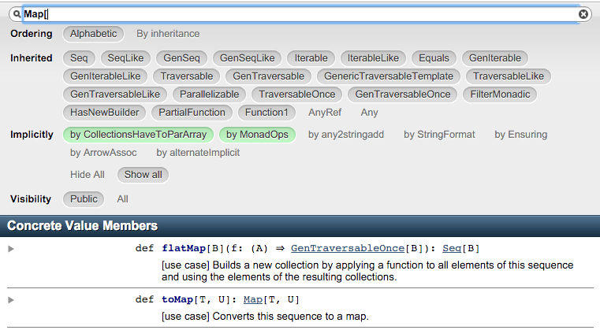

So you’ve decided to write some Scala. You’ve been sold on the power and flexibility of the language, you’ve gotten over the initial hurdles of the new syntax, and you’re ready to start writing clean, functional code. Besides, you’ve already mastered a handful of other common languages. How hard can it be to pick up one more?
If all your previous languages were mainly imperative, the jump may be harder than you’d expect. Things like strict immutability, functional purity, type classes, and so on are more than just syntactical differences; they require a fundamentally different approach to your code. As a newcomer to functional programming, it’s easy to get frustrated when seemingly simple problems turn into thorny logic puzzles.
This article will tackle one of the most common headaches I’ve seen for new Scala programmers: immutability. I won’t try to convince you that immutability is worth the struggle, though. Other people have already made that argument better than I could. Instead, I’d like to focus on giving you the tools you need to overcome these initial hurdles.
Conditional Assignment
Let’s start with something simple. You want to assign a value to a variable, but the exact value depends on some condition. In Java, you might write something like this:
final Foo foo;
if (someTest()) {
foo = someFoo;
} else {
foo = new Foo();
}
Even though foo is declared final, Java lets you postpone defining its value until later. Scala, on the other hand, is more strict; you must declare the value of foo right when you define it. So how can we recreate this pattern without introducing a lot of useless, intermediate values?
The trick here is to remember that most things in Scala are expressions, and expressions have values. So there’s no such thing as an “if-else statement”; it’s an if-else expression, whose value is the last expression of whichever branch is followed:
val foo =
if (someTest()) {
someFoo
} else {
new Foo
}
Note that we’re allowing Scala’s type inference to fill in the type of foo for us. This helps to keep the code clean, but be mindful of what type Scala infers for you. Take a look at the following snippets and guess the resulting types.
val foo1 =
if (someTest()) {
someFoo
} else {
new Foo
println("Using default value for `foo`.")
}
val foo2 =
if (someTest()) {
someFoo
}
val foo3 =
if (someTest()) {
someFoo
} else {
throw new Exception("No value for `foo` provided!")
}
The answers are: Any, Any, and Foo. (Any is analogous to Java’s Object type.) The important this to remember here is that while Scala will always assign the narrowest type that covers all possible return types, it will happily pick a very wide type in order to make that happen.
In the definition of foo1, our logging statement returns Unit, since that was the last statement in the block. Since Foo and Unit are otherwise unrelated, the “narrowest” type that includes both is Any.
Something similar happens with foo2. Even though it looks as if there’s only one branch, you can think of it as having two: the “if” case (which returns Foo) and the omitted “else” case (which returns Unit).
The final case demonstrates something interesting about how Scala treats exceptions. A block that ends in an exception being thrown can’t possibly return anything, so it has the special type Nothing. Nothing is a subtype of everything, in the same way that the empty set is a subset of every set. So since the exception-throwing block is a Nothing and Nothing is a subclass of Foo, the type of foo3 is inferred to be Foo.
For short if-then expressions, omitting the expected type is generally fine. It’s reasonable to expect developers to read the block and judge the type for themselves (or use their IDE to find out). That said, feel free to be explicit with your types to help out the reader and to help future developers avoid accidentally changing the type.
// NOTE: Will not compile, since you explicitly specified your type.
// This is good, since it catches the error below.
val foo: Foo =
if (someTest()) {
someFoo
} else {
new Foo
// Developer adds println statement for debugging, but explicit type
// on `foo` will catch the mistake.
println("Using default value for `foo`.")
}
tl;dr
- Remember that nearly everything in Scala is an expression and returns a value, including control “statements” like if-then, try-catch, and even simple, brace-enclosed blocks.
- Scala will sometimes infer a different type than you would expect. Be explicit with your types (instead of relying on type inference) when you want to be clear about the expected type. Over time you’ll get a feel for the type inference system and can start relying on them less.
Providing defaults for “null” values
A common subtype of the conditional initialization problem is providing a default value when one isn’t provided. You’ve probably seen this sort of code before in Java:
final Foo foo;
if (someFoo != null) {
foo = someFoo;
} else {
foo = new Foo();
}
In Scala code, you will generally not be passing nullable values around; you’d use an Option instead. (You may be familiar with the concept from Java 8’s Optional type.) This helps us avoid common errors where a value is unexpectedly null, resulting in the omnipresent NullPointerException.
But even though Option helps you distinguish nullable types from non-nullable types, you still need to somehow unpack it. We can solve this in problem using an if-then expression as in the previous section:
val foo: Foo =
if (maybeFoo.isDefined) {
foo = maybeFoo.get // Option#get is generally a code smell.
} else {
foo = new Foo
}
There’s some issues with this approach though. For one thing, it’s generally accepted that calling Option#get should be avoided. But even aside from that, doesn’t it seem like an awful lot of typing for something that’s easily abstracted?
This is an important intuition to develop about Scala: if something seems like it should be easier, it almost always is. Let’s take a look at the Scaladoc for Option to see if there’s anything there to help us.

Bingo! This does exactly what we want in one simple, clear line.
val foo = maybeFoo.getOrElse(new Foo)
tl;dr
- The Scala standard library is a rich resource. It’s almost always worth checking to see if there’s a baked-in function that does what you need.
- Scaladoc has a number of helpful features to make finding these helpful functions easier. Almost all of the major libraries make their Scaladoc available online.
Initializing collections
In Java, you typically start from an empty collection and build it up by adding things to it:
final List<String> fullNames = new ArrayList<>();
for (Name name : names) {
fullNames.add(String.format("%s %s", name.getFirst(), name.getLast()));
}
Once again, this relies on mutability: the state of fullNames isn’t fixed, so you can freely add new items to it. Scala collections are immutable by default, so this “build it up” style isn’t available. Instead, you should think of the operation in terms of transforming one collection into another:
val fullNames = names.map { name =>
s"${name.first} ${name.last}"
}
The filter operation will also come in handy, if for example you wanted only users whose last names start with “M”:
val fullNamesStartingWithM = names
.filter(_.last.startsWith("M"))
.map(name => s"${name.first} ${name.last}")
If you’ve programmed with Java 8 lambdas, this may be recognizable as a more streamlined version of what you would do with streams:
List<String> fullNamesStartingWithM =
names
.stream()
.filter(name -> name.getLast().startsWith("M"))
.map(name -> String.format("%s %s", name.getFirst(), name.getLast()))
.collect(Collectors.toList());
tl;dr
- In imperative languages, we get used to thinking in terms of loops and steps. In functional languages, the correct solutions are best thought of in terms of transformations, filters, and reductions.
Building a map
Building a map has the same problem as building a collection, but the solution isn’t quite as obvious. Say you wanted to build a map to look up users by ID.
final Map<Long, User> usersById = new HashMap<>();
for (User user : users) {
usersById.put(user.getId(), user);
}
From the last section, you should now be thinking about how to describe this change as a transformation of some kind. But in previous examples, we were keeping the general structure of “list” and just changing the contents. Now we need to actually transform the list into a different structure.
One way to figure this out is to look at the Scaladoc for Map and see how you define a new Map in the first place: Map(k1 -> v1, k2 -> v2). In Scala, you can treat a symbol like Map as if it were a function if there’s a method on it named apply, so we’re interested in the apply method in the Map companion object:
def apply[A, B](elems: (A, B)*): Map[A, B]
Note the type of elems is (A, B)*. T* is Scala’s syntax for varargs argument of type T. So effectively, a Map is built from a list of tuples (A, B), where the first element is the key and the second is the value. This is actually what’s going on when you initialize a Map by hand. The -> operator is just a convenience for creating pairs.
Now that we know that a Map can be build from a list of pairs, we can leverage that to initialize our Map:
val usersById = {
val elems = users.map(u => (u.id, u))
Map(elems: _*) // The _* syntax allows you to pass a sequence as a vararg
}
This works, but it seems kind of wordy. Since we now know that there’s a natural transformation from Seq[(A, B)] to Map[A, B], let’s take a look at the Scaladoc for Seq to see if there’s anything to help us out.

With this, our map can be created with an elegant one-liner:
val usersById = users.map(u => (u.id, u)).toMap
tl;dr
- When converting between different types, look at how your target type is created. This should give you an idea of what your intermediary type will be.
- Once you know what your intermediary type is, check to see if it provides a function to convert directly to your target type.
Conclusion
It’s easy for immutability to discourage new Scala developers. When you dive into a new language, it’s usually because you want to get something done, not fiddle around with basic things like initialization and collection twiddling. But immutability is fundamental to functional programming; without it, writing pure functions would be meaningless. Hopefully these examples will help you to overcome this initial hurdle and enjoy the benefits of working with values that will never change.